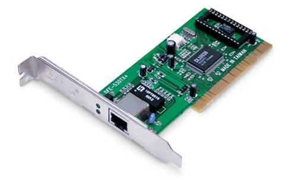
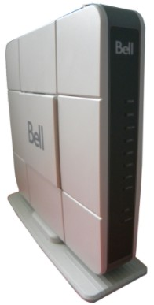
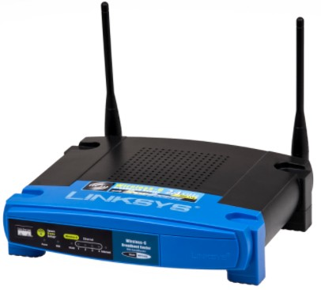
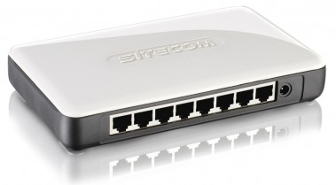
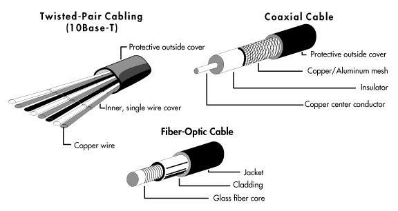
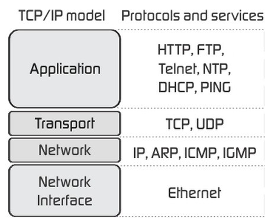

Unit 1: Understanding Computers
Activity 4: Networking
Code.org: How the Internet Works Video series
 |
The following videos from code.org provide an overview of how the Internet works. We will watch a few videos from this series at the start of each activity.
|
|---|
Home Computer Networking
As we saw in Activity 2, there are a number of software applications that require a network to function. In this activity we will briefly outline some basic networking concepts.
A network is a set of technologies that connects computers, which allows communication and collaboration between users. Networks exist for a variety of purposes:
- Sharing: applications, data, or hardware components like a printer.
- Communication: email, instant messaging, video conferencing, VoIP (Voice over IP)
- Entertainment: games, streaming TV shows & movies
- Data Backup: keeping copies of files in different locations in case of data loss.
Many homes and small companies have a LAN - a local area network. This refers to a small network of 2 or more computers that is contained within one building. Companies that have buildings in multiple locations will require a WAN (wide area network), which covers a number of buildings and possibly even buildings in different cities. A WAN is essentially two or more LANs that are connected.
Home Network Setup
To set up a LAN there are certain hardware components that are needed. Check at home to see what your setup is (hint: You will need this information for your assignment!)
|
Network interface controller (NIC). This can be a expansion card, circuitry included on the motherboard, or an external peripheral connected through a USB port or card reader. The two major types of NICs are those intended for wired networks and those intended for wireless networks. Many NICs require a driver to communicate with the computer's OS. |
 |
|---|
|
 |
DSL or Cable Modem. A DSL (Digital Subscriber Line) or cable modem is used to translate the transmissions from the medium (twisted pair or coaxial cable) used by your Internet Service Provider (ISP) to those of a standard network (Ethernet). Modems usually also function as a gateway: it is the place where the user logs into the ISP, receives a network address and connects to the network as a whole. Many modern modems also contain a built-in router and wireless access point, though you can install your own if you wish. |
|---|
 |
The word "Modem" means modulate/demodulate. Early modems were used to connect two computers together or a computer to a network using the audio signals required at the time. The modem would translate (modulate into sounds) the digital data of the computer to an audio analog signal, and another modem connected to the other computer or network would translate the analog audio signals back into digital information. |
|---|
|
Router. A network router is the device that connects two or more networks together. Although there are many machines inside a network, they are all represented by the router's address. Many routers contain a wireless access point, to allow devices to connect though WiFi (IEEE 802.11x standard). Many routers also contain built-in hubs or switches, which allow multiple computers to connect to the network. |
 |
|---|
|
 |
Hub/Switch. A network hub or switch allows you to use network cabling to connect the devices on a network together. In most home networks, a hub/switch is a part of the router or modem. The main difference between a hub and a switch is that a hub broadcasts each "packet" of information received to all connected computers, while a switch sends the packet only to the intended recipient. |
|---|
 |
Learn more about the difference between routers, switches and hubs |
|---|
Network Media
All the devices on the network must be connected by something. There are actually several ways that networks might be connected.

- Electrical Cables
- Telephone wire (DSL: 50 Mbps)
- Twisted Pair Cabling
- Cat 5/5e (most common: 100 Mbps - 1 Gbps)
- Cat 6/6a (newest: 10 Gbps)
- Coaxial cable (250 Mbps - 1 Gbps)
- Power wires (500 - 1200 Mbps)
- Fibre Optic Cables
- Glass Fibre Optic Cables (Laser transmitters) (40+ Gbps)
- Plastic Fibre Optic Cables (LED transmitters) (10+ Gbps)
- Radio (wireless over the air)
- Wifi: range of 20 meters or 66 feet
- 802.11b wireless (11 Mbps)
- 802.11g wireless (54 Mbps)
- 802.11n wireless (300 Mbps)
- 802.11a wireless (54 Mbps)
- 802.11ac wireless (1300 Mbps)
- Bluetooth: range of 10 metres (1 Mbps)
- 3G/4G/LTE (mobile networking; speed varies with provider)
|
The units for data transfer rates are in bits per second (bps), hence the use of a lowercase 'b'. Recall that memory storage tends to be describe in bytes (1 byte = 8 bits), which is abbreviated with an uppercase 'B'. |
|---|
Networking Protocols & Services
|
A protocol is a set of rules for exchanging information. There are a number of protocols for different purposes. Each protocol works at a different network layer. Just like computers, networks have layers to shield the applications from the lower-level details of the network. TCP/IP (Transport Control Protocol/Internet Protocol): Since the advent of the Internet, TCP/IP has become the standard protocol for networking. Everything you send over the Internet follows these protocols. |
 |
|---|
Transport Control Protocol (TCP): responsible for maintaining the connection between the source & destination. It detects and fixes errors, and manages the flow and reliability of the connection.
Internet Protocol (IP): defines the IP address of the computer. Many computers still use the IPv4 standard, which is a 32-bit address consisting of four 8-bit numbers (Ex: 172.22.40.225). However, The number of devices attached to the Internet has become so large that this address scheme is slowly being updated to a new scheme called IPv6. The IPv6 standard uses 128-bit addresses, consisting of 16 8-bit numbers (Ex: 2001:0db8:85a3:08d3:1319:8a2e:0370:7334)
 |
The IPv6 address above uses the hexadecimal numbering system, which contains 16 different digits instead of the 10 we use in the decimal system. After the digit 9, we 'count' with a, b, c, d, e & f before moving to the next place value. Expressed in decimal numbers, the IPv6 address |
|---|
HTTP (Hyper Text Transfer Protocol): The protocol used by browsers to request web pages from a web server.
FTP (File Transfer Protocol): Allows users to upload & download files to/from a remote server.
DHCP (Dynamic Host Configuration Protocol): Simplifies the assignment of IP addresses.
SMTP (Simple Mail Transfer Protocol): Used by email programs to send (and sometimes receive) email message.
IMAP (Internet Message Access Protocol): An alternate protocol used by email programs for receiving messages; it lets the user keep the messages on the server so it can be accessed on multiple devices.
DNS (Domain Name System): A protocol used to resolve a domain name, such as ocsb.ca, to an IP address. A DNS server has access to a list of the IP addresses and their corresponding domain names, so it is tasked with doing the translation.
Networking Utilities
The following is a short list of network utilities that can be accessed from a standard Windows Command Prompt. Try them out on your computer!
- ping
- Checks for connectivity, tries 4 times to send a packet and look for a response
- Command: ping website
- traceRT
- Traces the path that packets will take to get to a particulate website
- Command: traceRT website
- ipconfig
- Displays the current IP configuration
- Command: ipconfig /all
- netstat
- Displays local and remote connections to the computer
- Command: netstat
Evidence of Learning
 Networking Task
Networking Task
Once you have read the lesson and watched the videos above, investigate your computer!
You will need to do this for BOTH your computer at school AND at home. Share your findings using the Activity 4 Evidence Card in Hapara:
- At home, investigate the following:
- Identify the networking hardware found in your home
- Identify the location of your networking hardware
- Identify the network media used in your home
- Identify some network information for one home computer (IP address, name of adapter, DHCP, DNS, media)
- Describe the security you have on your home network
- What other devices do you have at home that connect to the internet?
- Identify some network information for the computer assigned to you at school (IP address, name of adapter, DHCP, DNS, media)
- Please note that this section is only required for in-person classes
Click Submit on the Activity 4 Evidence Card when you are done this task.